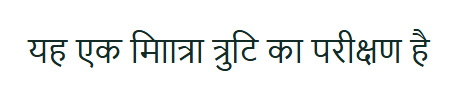

FixSeen on phone and desktop
On the page
यह एक मााित्रा त्रुटि का परीक्षण है
- माािA vowel sign with no letter before it
U+092E U+093E U+093E U+093F

What BharatCode says
This Devanagari text contains broken character sequences that render as strange, malformed letters. Please fix the underlying text by removing the stray vowel signs so each vowel follows its consonant.
इस हिंदी टेक्स्ट में गलत अक्षर संयोजन हैं जिससे शब्द बिगड़े हुए दिख रहे हैं, कृपया इसे सही करें।
ಈ ಹಿಂದಿ ಪಠ್ಯದಲ್ಲಿ ತಪ್ಪು ಅಕ್ಷರ ಸಂಯೋಜನೆಗಳಿವೆ, ದಯವಿಟ್ಟು ಸರಿಪಡಿಸಿ.
What to change
Correct the text itself. This is a typing or conversion mistake, so CSS cannot repair it.
Technical details
- Checked at
- phone (390 px) and desktop (1440 px)
- Screenshot
- Whole page at 390 px
{
"invalid_sequences": [
{
"position": 8,
"sequence": "माा",
"codepoints": [
"U+092E",
"U+093E",
"U+093E"
],
"reason": "dependent vowel sign without a preceding consonant"
},
{
"position": 9,
"sequence": "ााि",
"codepoints": [
"U+093E",
"U+093E",
"U+093F"
],
"reason": "dependent vowel sign without a preceding consonant"
}
]
}